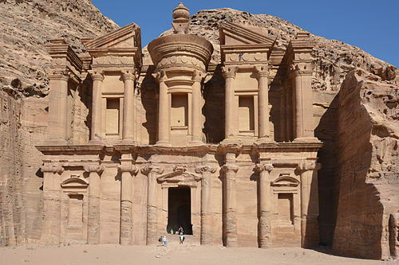

01 / Wonder of the World
The Rose-Red
Discover Petra
The Rose-Red
City of Petra
Carved directly into rose-red sandstone cliffs more than 2,000 years ago, Petra stands as Jordan's most iconic treasure and one of humanity's greatest architectural achievements. Enter through the Siq — a narrow gorge nearly two kilometres long — and emerge to the breathtaking façade of Al-Khazneh.
312 BC Nabataean Capital
UNESCO World Heritage
New 7 Wonders of the World


2000
Years Old